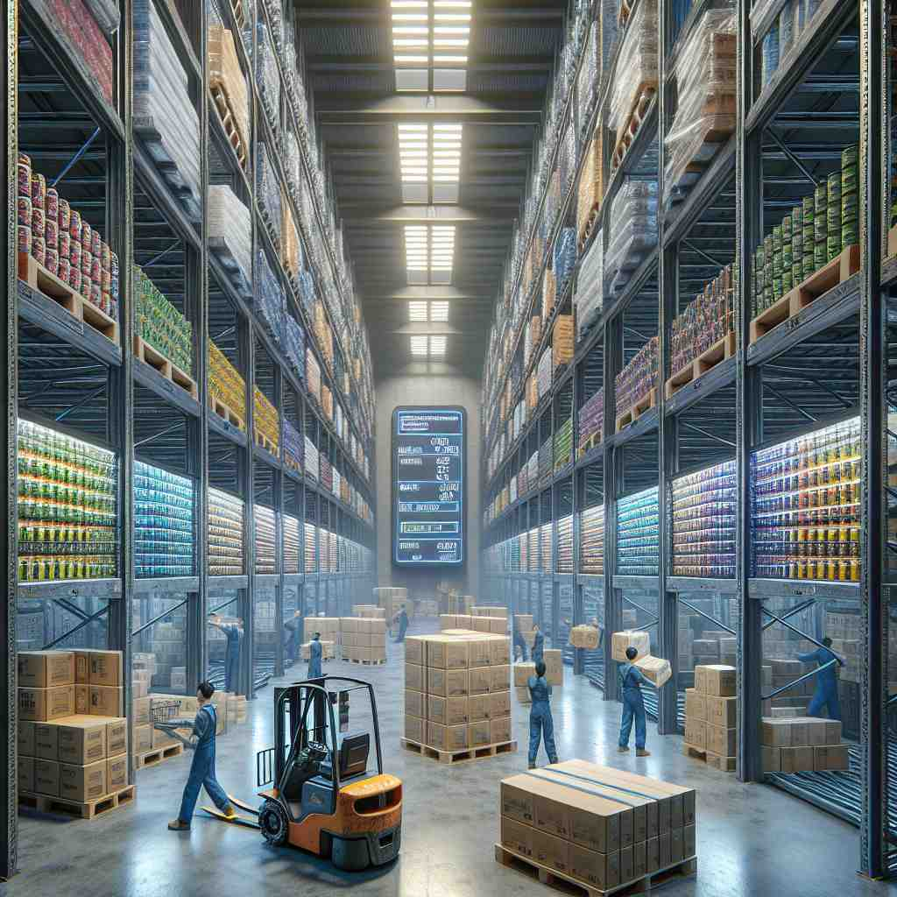

💬 The warehouse has a large supply of stock for the store.
💬 The pharmacist checks the pharmaceutical stock every day.
💬 The family is preparing their firewood stock for the winter.

💬 The store has a large stock of supplies for everyone.
🔈 [stɒk]
🗝️ n. a supply of goods or materials available for use or sale
🖼️ 在一个繁华的商店里，货架上摆满了各种商品。顾客们来来往往，挑选自己需要的东西。店员站在一旁，检查货架上的库存，确保所有商品充足。这体现了'stock'作为商品或材料的供应的含义。
🔍 想象一个仓库，里面堆满了各种"库存"(stock)。这个核心概念可以延伸到金融领域的股票、农场的牲畜、厨房的汤底，甚至是一个人的家族背景。无论是实物、抽象概念还是动作，都围绕着"供应"这个中心思想。记住这个核心意义，你就能更容易理解和记忆'stock'的多重含义。
💬 The warehouse has a large supply of stock for the store.
💬 The pharmacist checks the pharmaceutical stock every day.
💬 The family is preparing their firewood stock for the winter.
💬 The store has a large stock of supplies for everyone.
🌳 没有明显的前缀或后缀，核心部分为 "stock"，表示 "库存"、"股票"、"储备" 等多种含义。该词历史上与商品或资源的储存和管理有关。
💡 可以通过联想到商店的 "货架 (stock shelves)" 来记忆。"stock" 像是商店的 "主干"，驱动其运营，不论是指货物、股票还是资源。
🗝️ n. the capital raised by a company through the issue of shares
🖼️ 在一个现代化的会议室内，公司高管们正聚集在一起讨论首次公开募股的计划。一位财务官解释道：'发行股票可以为我们筹集大量的资金，用于公司扩展。'这个场景展示了'stock'作为公司通过发行股票而获得的资本的含义。
💬 He invested in tech company stocks.
❓ 公司股份被视为可交易的"商品供应"
🗝️ n. farm animals bred and kept for their products
🖼️ 在一个宽广的农场上，成群的奶牛安静地在牧场上吃草。农夫们定期检查这些牲畜，确保它们健康，以生产牛奶和乳制品。这体现了'stock'作为农场动物及其产品的意义。
💬 They keep a good stock of cattle on their farm.
❓ 农场动物被视为活的"商品供应"
🗝️ n. liquid made by cooking bones, meat, or vegetables, used as a base for soups
🖼️ 在一个温暖的家庭厨房里，妈妈正忙着煮一锅香气扑鼻的汤。她先用骨头和蔬菜煮出汤底，然后加入其他配料制作一顿美味的晚餐。这展示了'stock'作为汤底液体的含义。
💬 She made chicken stock for the soup.
❓ 汤底被视为烹饪的"基础供应"
🗝️ n. a person's family background or ancestry
🖼️ 在一个温馨的家庭聚会上，家族长者正在给孩子们讲述祖先的故事。他说，'我们的家族源远流长，有着丰富的历史。'孩子们认真地听着，了解自己的家族渊源。这体现了'stock'作为家族背景或祖先的意义。
💬 He comes from good stock.
❓ 家族血统被视为一个人的"遗传供应"
🗝️ v. to provide or fill with a supply of something
🖼️ 在一个大型超市的仓库中，工作人员正忙着将一箱箱商品整理上架。他们不断地补充库存，以确保货架上始终有足够的产品供顾客选购。这展示了'stock'作为补充或供应某物的含义。
💬 We need to stock the fridge before the party.
❓ 从核心名词含义衍生出的动作
🗝️ adj. regularly kept in store and available for sale or use
🖼️ 在一个整洁的小商店里，店主向一位顾客介绍店里的商品。他说：'这些是我们常备的商品，随时可以购买。'顾客满意地点了点头，挑选了一些商品。这体现了'stock'作为常备销售或使用的商品的意义。
💬 These are our stock items.
❓ 描述常备"供应"的状态